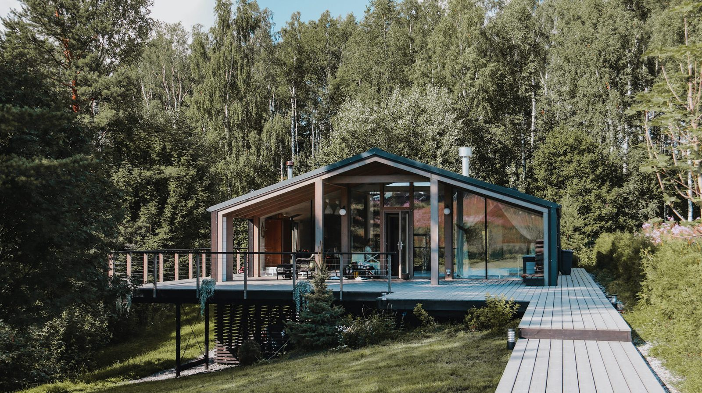

Olejový nátěr na dřevo · tradiční švédská receptura
Tajná zbraň Vikingů byla černá, lepkavá a páchla po borovici.
Borový dehet nesl jejich lodě přes Atlantik. Ve Švédsku se na něm stavěl export dvě stě let. Pak na něj svět zapomněl. My ho vracíme na české ploty, terasy a fasády.
680
Nejstarší vikinská dehtová jáma, Švédsko
Tisíc tři sta let na lodích, plotech a lyžích
Dehet se pálí v milíři z naštípané borovice jako dřevěné uhlí. Smůla, která při žáru vytéká, je látka, která dřevo chrání biologicky, chemicky i fyzikálně zároveň.
680–900Vikingové impregnují dlouhé lodě dehtem a plují po celém kontinentu i přes Atlantik.
1615Švédsko vyváží 13 000 sudů ročně. Stockholmský dehet má královský monopol.
1750–1780Vrchol: desítky tisíc sudů ročně pro evropské válečné a obchodní flotily.
DnesStejná receptura, borový dehet, tungový a lněný olej. Rexwood, Ústí nad Labem.
Sedm odstínů. V každém dehet.
Lazura dá dřevu barvu. PINNER dá barvu a dehet, který ve dřevě dál pracuje. Vyberte na skutečném prkně.


„Nátěr je doplněk. Střecha, přesah a odvětrání udělají 80 % práce.“
Konstrukční ochrana dřeva · návod Číst návod